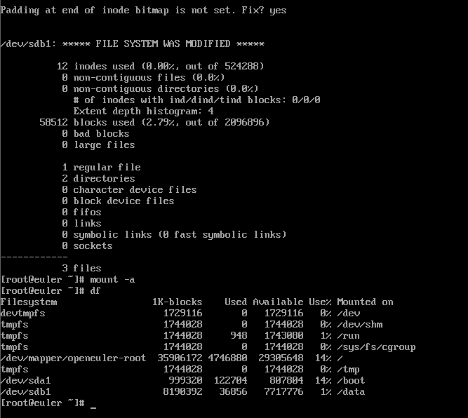

description：EXT文件系统的运行？与操作系统的文件数据有关。文件系统通常会将两部分的数据分别存放在不同的区块：权限与属性放置到inode中，至于实际数据则放置到 block区块中。 另外，还有一个超级区块 (superblock) 会记录整个文件系统的整体信息，包括 inode与block的总量、使用量、剩余量等。每个 inode与 block 都有编号，至于这三个数据的意义可以简略说明如下：
superblock：记录此 filesystem 的整体信息，包括 inode/block 的总量、使用量、剩余量， 以及文件系统的格式与相关信息等；
inode：记录文件的属性，一个文件占用一个 inode，同时记录此文件的数据所在的 block 号码；
block：实际记录文件的内容，若文件太大时，会占用多个 block 。
文件系统原理基础介绍
- inode
inode是ext文件系统中非常重要的概念，它记录了文件或目录的元数据信息，包括文件类型、文件大小、权限等。inode还包含了指向文件数据块的指针，因此可以快速访问文件的内容。在需要快速访问文件内容的场景下，使用ext文件系统可以提高文件系统的性能。例如，对于需要频繁读取大文件的应用程序，使用ext文件系统可以更快地访问文件内容，提高应用程序的响应速度。 - block
块是ext文件系统中存储文件数据和文件系统本身元数据的基本单位，通常为4KB或8KB。文件数据和文件系统本身的元数据都存储在块中，因此块的大小会影响文件系统的性能。在需要存储大量大文件的场景下，使用较大的块可以提高文件系统的性能。例如，对于存储视频、音频等大文件的服务器，使用8KB块可以提高文件系统的读写速度。
- superblock
superblock是ext文件系统中存储文件系统元数据的特殊块，包括文件系统的大小、块大小、inode数量、 磁盘块分组信息等。superblock的信息可以帮助操作系统快速定位文件系统的元数据&
1 | [root@euler ~]# cp /etc/passwd . |
1 | [root@euler ~]# ls -li passwd |
superblock备份情况
超级快作用：记录文件系统的元数据（block iNode 等）
INode：记录文件的元数据
1 | Group 0: (Blocks 0-32767) csum 0x0f79 [ITABLE_ZEROED] |
用备份superblock修复
fsck -> ext4
1 | [root@euler ~]# cd /data/ |
e2fsck
利用后面的超级块位置
1 | [root@euler ~]# dumpe2fs /dev/sda1 |more |
1 | [root@euler data]# ls |
dd
1 | # dd = device-to-device if=input file of=outfile file bs=block size count |
